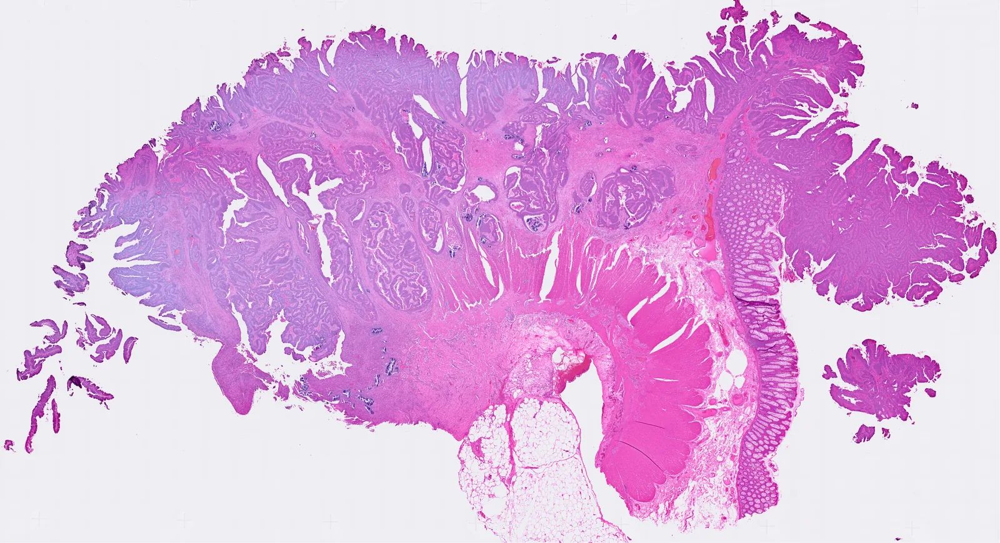
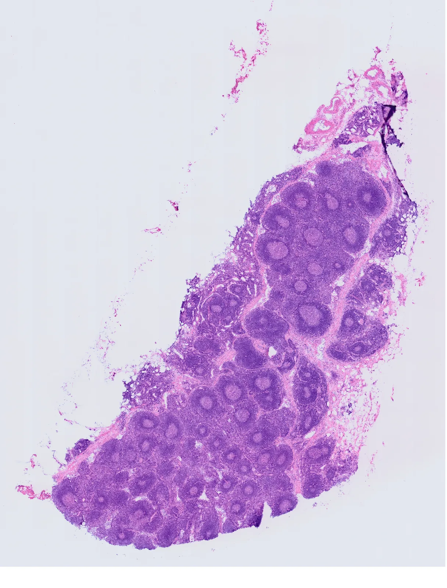
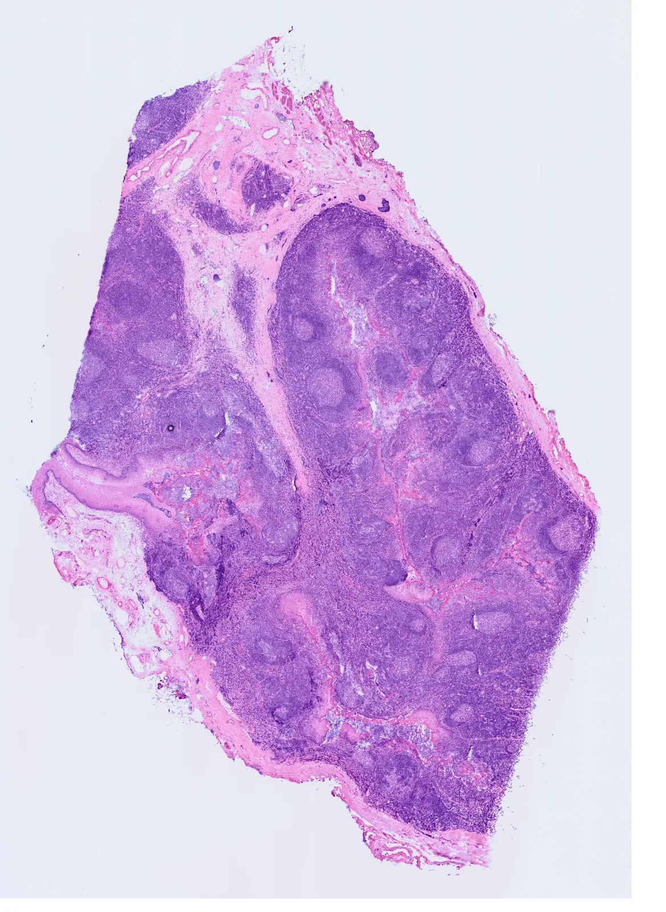
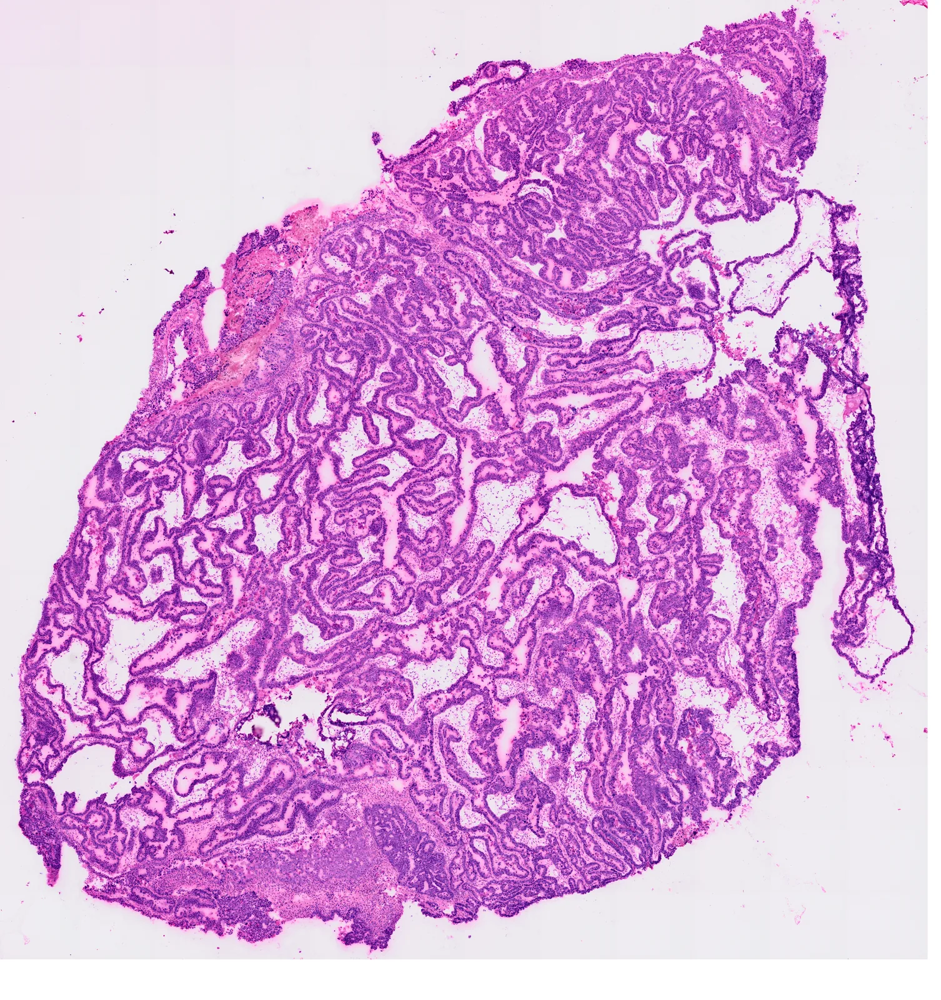
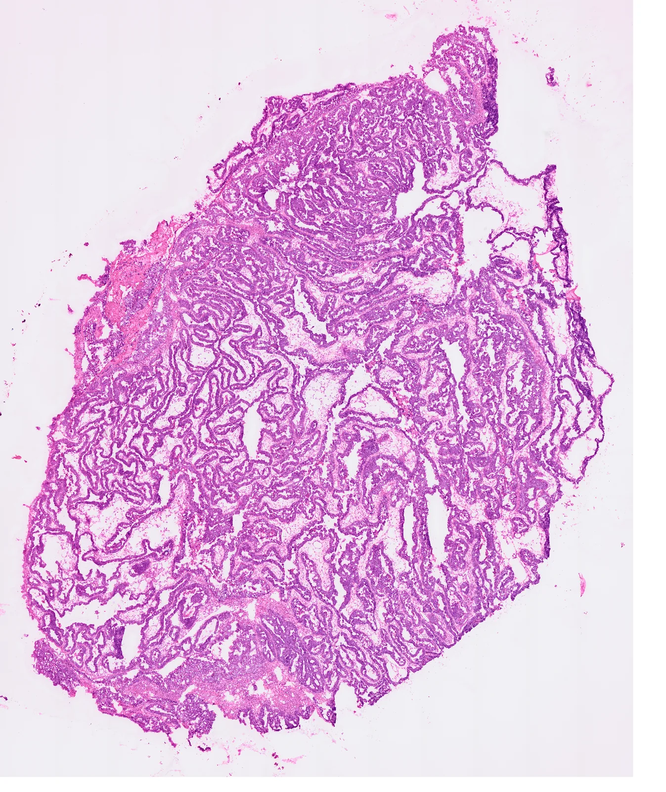
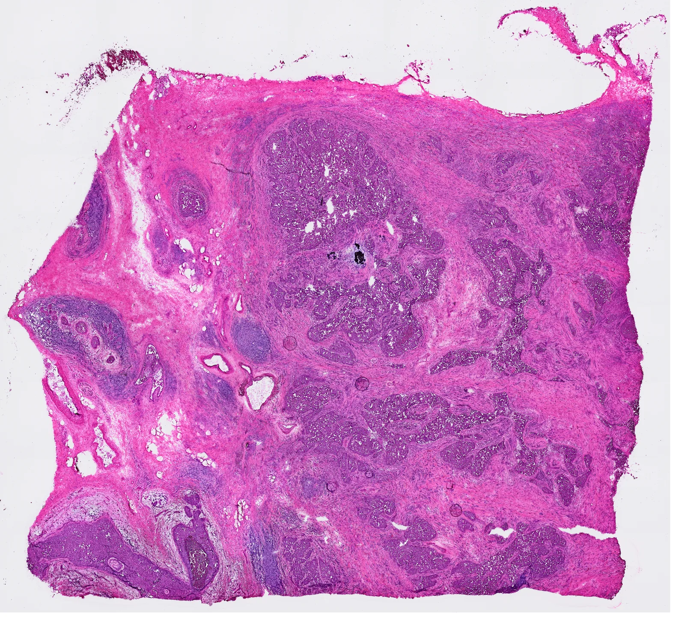
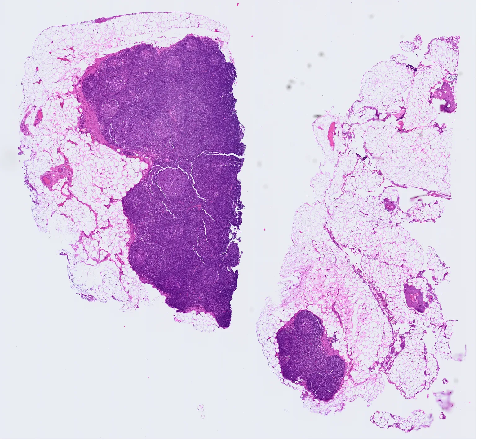
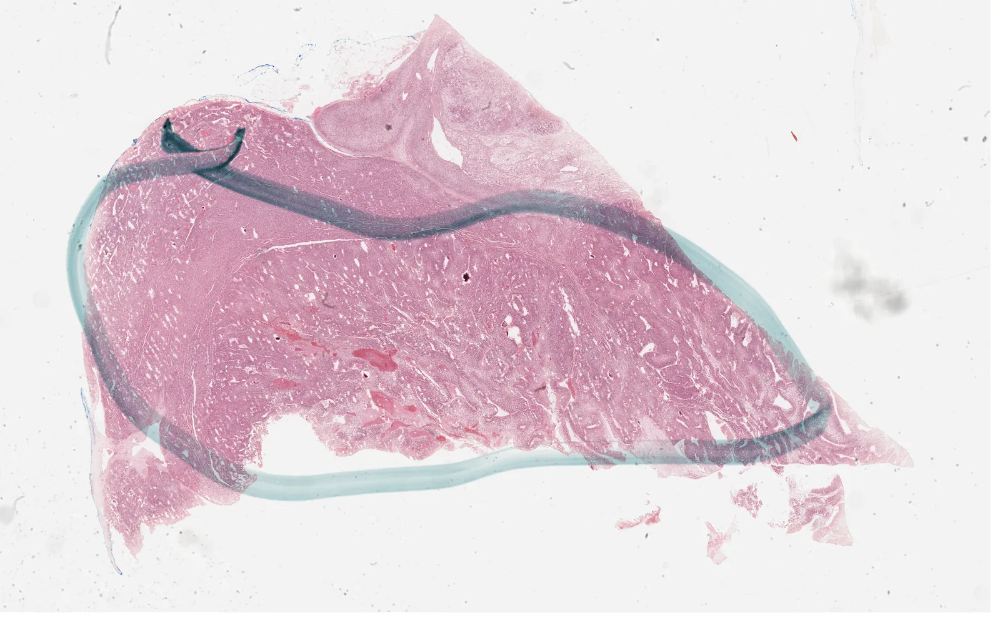

10x colorectal cancerH&E · U-Net · DeepLabV3+ · MedSAM · VISTA-PATHAll four methods were applied across the complete calibrated frame of each listed slide. There are no independent whole-slide expert masks for these slides, so these are visual predictions, with no accuracy scores or method ranking. The web images are downsampled previews; full-resolution TIFFs and verification receipts are retained locally.

10x lymph node, 3′H&E · U-Net · DeepLabV3+ · MedSAM · VISTA-PATH
10x tonsil, 3′H&E · U-Net · DeepLabV3+ · MedSAM · VISTA-PATH
10x ovarian cancer, 3′H&E · U-Net · DeepLabV3+ · MedSAM · VISTA-PATH
10x ovarian cancer, fresh frozenH&E · U-Net · DeepLabV3+ · MedSAM · VISTA-PATH
10x breast cancer, fresh frozenH&E · U-Net · DeepLabV3+ · MedSAM · VISTA-PATH
10x lymph node FFPEH&E · U-Net · DeepLabV3+ · MedSAM · VISTA-PATH
TCGA-ACC OR-A5K9H&E · U-Net · DeepLabV3+ · MedSAM · VISTA-PATH